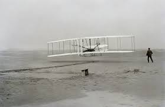
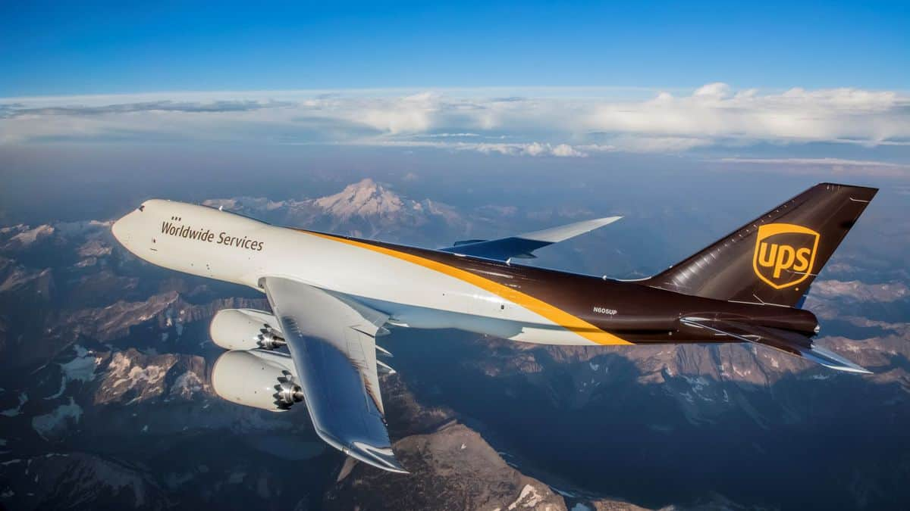
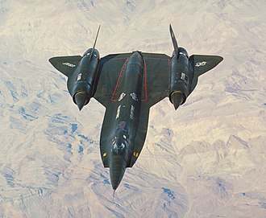

Airplanes have many different uses such as military operations, transportation of products and people, espionage, and more.
There are many types of airplanes.
Airplanes have been around for many years, since 1903.
The first airplane was made by the Wright brothers and flown in Kittyhawk, North Carolina.
Military airplanes come in a variety of shapes and sizes, and perform different tasks.
There are interceptor planes, fighter jets, spy planes, and cargo/transport planes.
Some examples of military planes include:
Civilian airline planes are the planes you see taking off from the airport.
Some examples include:

Some planes are used to transport goods such as materials needed for manufacturing, produce, grain, packages, mail, and more.
While there are some spy planes in use within the military, some are owned and operated by the CIA. Though not currently in their possesion my personal favorite of these planes is the Cold War era, supersonic A-12 Archangel. This impressive aircraft was a single seat, high altitute intelligene aircraft powered by twin J58 engines. This planes was also prototyped in other varients including the YF-12, the interceptor model, and was ultimetly the inspiration for the SR-71 Blackbird.
Learn more about the A-12 here: https://en.wikipedia.org/wiki/Lockheed_A-12
